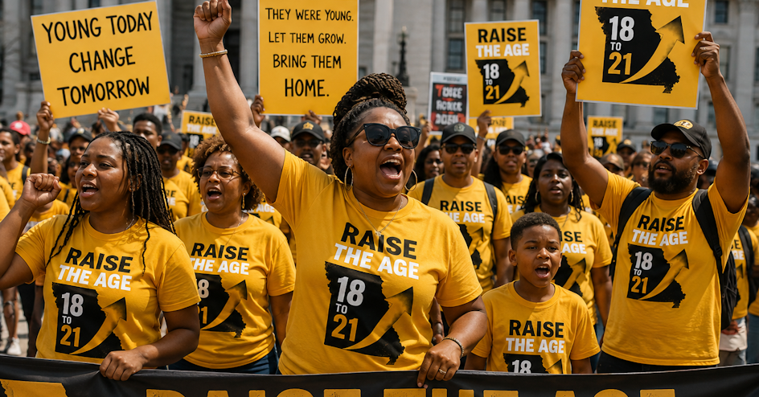

18
to
21
Emerging adults in Missouri: the numbers tell a story.
Raise the Age supports meaningful sentence review for people who were sentenced as emerging adults. Real people, stronger families, safer communities, and a brighter Missouri are possible.
Small number of counties
Big impact

- 96
- St. Louis City
- 35
- St. Louis County
- 25
- Jackson County / Kansas City
Map: Wikimedia Commons county map by Thomascampbell123/Awmcphee/Elli using U.S. Census TIGER/Line data.
They were young. Let them grow. Bring them home.
Raise the Age: a stronger, safer Missouri is possible.
The numbers tell a story
A statewide issue with concentrated impact


Skyline imagery from Wikimedia Commons. Credits: Gateway Arch skyline from the National Archives; Clayton skyline by Paul Sableman; Kansas City skyline by Charvex.
People. Potential. Second chances.
Browse the stories
Stories will appear here as they are added to the campaign archive.
Campaign partner
Connect with the organization behind the work
Justice For All
Social advocacy organization supporting people and families harmed by the criminal justice system.
Racial equity matters
A stronger, safer Missouri is possible
The campaign centers people who were sentenced when they were still growing into adulthood, and asks Missouri to make room for review, accountability, and demonstrated change.
Families across Missouri are affected, with the greatest impact concentrated in a small number of communities. Second chances can strengthen families, reduce recidivism, and build safer communities.
Missouri already recognizes that young people need protection while they grow. We set age limits before teenagers can drive alone, vote, enlist without adult consent, buy tobacco or alcohol, and gamble. In nearly every part of civic life, the law understands that youth, judgment, and pressure are connected. Raise the Age asks Missouri to bring that same common sense to sentencing review for people who were still emerging into adulthood.
Take action
Support Raise the Age: 18 to 21
Add your name when the petition opens and help show Missouri that emerging adults deserve review, accountability, and a real chance to come home after demonstrated growth.
Sign the petition